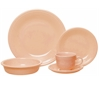

Apricot
Retired1986-1998 · Color No. 104
Introducing Apricot, made by The Fiesta Tableware Company from 1986 to 1998. It's a warm and inviting hue reminiscent of ripe apricots, perfect for adding a touch of sunny charm to any tablescape. Mix and match Apricot with colors like Sunflower and Paprika for a vibrant and cheerful table setting, or pair it with Slate and Sage for a more subdued yet sophisticated look.

Production
Apricot was retired in 1998, so it is a hunt for secondhand pieces now. Fiesta Factory Direct is where the colors still being made are, if you are filling a set.
Shop Fiesta Factory Direct (opens in a new tab)Notes on Apricot
Apricot was the third color of the 1986 relaunch, and it's the one that dates that moment most precisely - a soft, pale peach that belongs unmistakably to late-eighties interiors. Twelve years on the shelf, retired in 1998. It carries very little color for an orange, which makes it behave more like a warm neutral than an accent: it'll sit next to almost anything without competing. That also makes it easy to miss in a photograph, where it can read as a pinkish Ivory. If you're hunting one down, it's the first Post 86 orange, and nothing since has been anywhere near as quiet.
Using Apricot on a table
Apricot is soft enough to sit beside almost anything. It works as a bridge between two stronger colors that would otherwise argue. At L* 80 it is one of the paler glazes in the line: dark food reads sharply against it, pale food much less so. It nearly disappears against a white cloth (1.7:1), so it shows best on dark wood or a colored runner.
Below, 5 combinations built only from colors Fiesta has actually produced. Each says which rule it follows, and which pieces you can still buy today.
The pairing in its own description
Named in the descriptionThese colors are named alongside Apricot in this guide's description of it.
Buy these to go with it
Apricot was retired in 1998, but these are all in production now - the set you can actually finish buying.
Opposite on the wheel
Peacock sits roughly opposite Apricot in hue, which is the highest-contrast pairing the palette offers. The neutrals keep it from shouting.
All orange
Every color here is from the orange family, arranged light to dark. A single-family table reads calm and deliberate rather than busy.
-
Your color Apricot
- Poppy
- Butterscotch
Three-way split
Jade and Lilac sit about a third of the way around the color wheel from Apricot in each direction. Evenly spaced hues stay lively without any one taking over.
Where Apricot sits in the line
Apricot was the first orange Fiesta made; 4 more have followed it. In 1986 it arrived alongside Black and White. What else happened in 1986 →
Closest colors in the palette
Ranked by CIEDE2000 (ΔE) against Apricot. Under about ΔE 5 two colors are hard to tell apart side by side - useful when you are identifying an unmarked piece.
On the table alongside Apricot
13 colors were in production at the same time. The 10 nearest in the timeline: